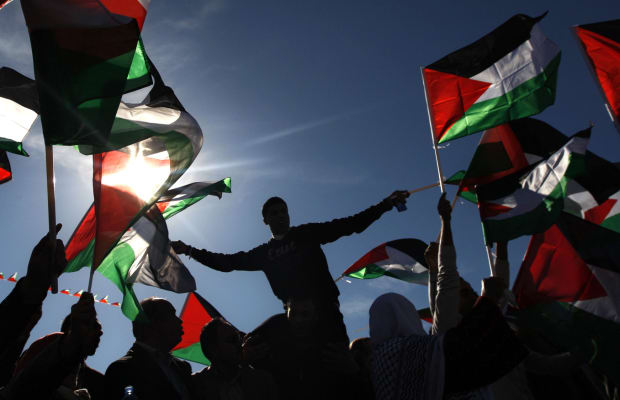

The following website contains material that may be harmful or traumatising to some audiences.
Do you wish to continue?

Palestine is a small region of land that has played a prominent role in the ancient and modern history of the Middle East. The history of Palestine has been marked by frequent political conflict and violent land seizures because of its importance to several major world religions, and because Palestine sits at a valuable geographic crossroads between Africa and Asia. Today, Arab people who call this territory home are known as Palestinians, and the people of Palestine have a strong desire to create a free and independent state in this contested region of the world.
In 1947, after more than two decades of British rule, the United Nations proposed a plan to partition Palestine into two sections: an independent Jewish state and an independent Arab state. The city of Jerusalem, which was claimed as a capital by both Jews and Palestinian Arabs, was to be an international territory with a special status. Arab groups argued that they represented the majority of the population in certain regions and should be granted more territory. They began to form volunteer armies throughout Palestine.
The Arab-Israeli War of 1948 broke out when five Arab nations invaded territory in the former Palestinian mandate immediately following the announcement of the independence of the state of Israel on May 14, 1948. In 1947, and again on May 14, 1948, the United States had offered de facto recognition of the Israeli Provisional Government, but during the war, the United States maintained an arms embargo against all belligerents.
Click the button below to learn something new.
Then go share it.